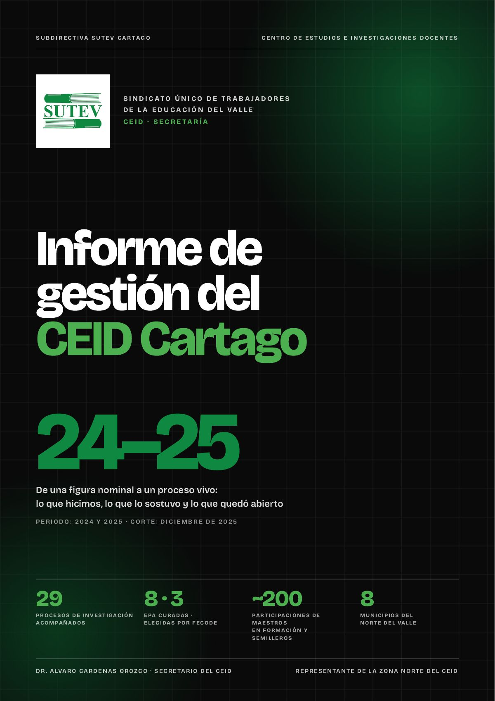
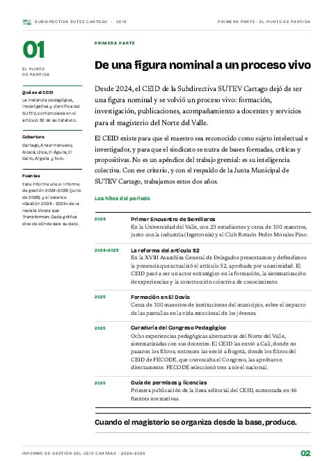
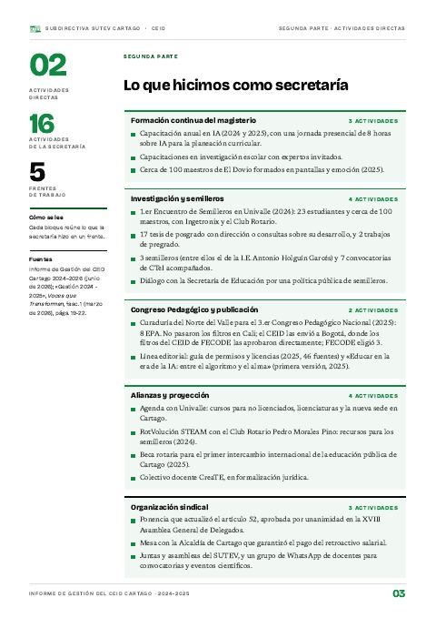
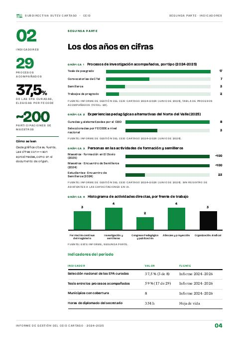
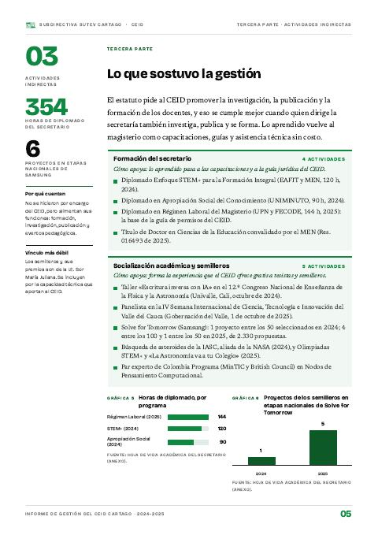
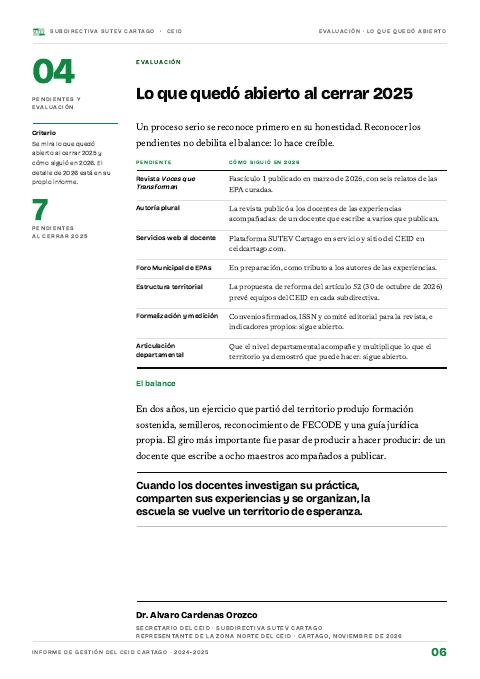

Informe de gestión del CEID Cartago 2024-2025
Dos años que pusieron en marcha el CEID: 29 procesos de investigación acompañados, ocho experiencias de aula llevadas al Congreso Pedagógico Nacional y formación que llegó al territorio.
- 29procesos de investigación acompañados
- 8EPA curadas para el Congreso Pedagógico
- 3EPA seleccionadas por FECODE
- ~200participaciones de maestros en formación y semilleros

Leer el informe completo
PDF · 9 págs. · 1,3 MBDesde 2024, el CEID de la Subdirectiva SUTEV Cartago dejó de ser una figura nominal y se volvió un proceso vivo: formación, investigación, publicaciones, acompañamiento a docentes y servicios para el magisterio del Norte del Valle. Este informe une el informe de gestión de junio de 2026 y el balance «Gestión 2024 - 2025» de la revista Voces que Transforman, con corte en diciembre de 2025. Lo de 2026 está en el informe de gestión 2026.
Dieciséis actividades en cinco frentes
En dos años, la secretaría trabajó en cinco frentes. La investigación con los semilleros y las alianzas que la sostienen concentran la mitad de lo hecho.
Fuente: Informe de gestión 2024-2025, segunda parte (16 actividades).
Acompañar a quien investiga
El CEID acompañó 29 procesos de investigación: tesis de posgrado de docentes, trabajos de pregrado de sus familiares, semilleros escolares y convocatorias de ciencia y tecnología. En las tesis hubo dirección y consultas sobre su desarrollo, sin costo.
Fuente: Informe de Gestión del CEID Cartago 2024–2026 (junio de 2026), tabla de procesos acompañados (total: 29).
Del aula al Congreso Pedagógico Nacional
Como curador del Norte del Valle, el CEID acompañó a ocho docentes y colectivos a sistematizar sus experiencias. En Cali no pasaron los filtros; el CEID las envió entonces a Bogotá, donde los filtros del CEID de FECODE, que convocaba el Congreso, las aprobaron directamente. FECODE seleccionó tres a nivel nacional: Trazos de Infancia, ECOhilo y ConectaTE. Su historia está en el reconocimiento a las ocho EPA.
Fuente: Informe de gestión 2024-2025 (3 de 8: 37,5 %).
Formación que llega al territorio
La formación salió de Cartago: cerca de 100 maestros de El Dovio trabajaron el impacto de las pantallas en la vida emocional de los jóvenes, y el primer Encuentro de Semilleros reunió en la Universidad del Valle a 23 estudiantes y cerca de 100 maestros.
Fuente: Informe de Gestión del CEID Cartago 2024–2026 (junio de 2026). Las capacitaciones en IA no tienen registro de asistentes.
Semilleros que llegan a la etapa nacional
El trabajo con los semilleros de la ciudad empezó a dar frutos en las etapas nacionales de Solve for Tomorrow (Samsung): de un proyecto en 2024 a cinco en 2025, de 2.330 propuestas.
Fuente: hoja de vida del secretario, anexa al informe.
Lo que quedó abierto
Al cerrar 2025 quedaron siete pendientes: la revista, la autoría plural, los servicios web, el Foro Municipal de EPAs, la estructura territorial, la formalización y medición, y la articulación departamental. Varios se resolvieron o se pusieron en marcha en 2026; el informe cuenta cómo siguió cada uno.
El informe se lee por partes aquí abajo. El PDF completo trae, además, la hoja de vida del secretario como anexo.
En este informe
5 partes
Pág. 2 · 1 pág.De una figura nominal a un proceso vivoAlvaro Cardenas OrozcoDesde 2024, el CEID de la Subdirectiva SUTEV Cartago dejó de ser una figura nominal y se volvió un proceso vivo. Estos son los hitos del periodo.Leer esta parte →
Pág. 3 · 1 pág.Lo que hicimos como secretaríaAlvaro Cardenas OrozcoDieciséis actividades directas en cinco frentes: formación, investigación y semilleros, Congreso Pedagógico y publicación, alianzas y organización sindical.Leer esta parte →
Pág. 4 · 1 pág.Los dos años en cifrasAlvaro Cardenas OrozcoProcesos acompañados, experiencias llevadas al Congreso, personas formadas y actividades por frente. Cada gráfica cita su fuente.Leer esta parte →
Pág. 5 · 1 pág.Lo que sostuvo la gestiónAlvaro Cardenas OrozcoEl estatuto pide al CEID promover la investigación, la publicación y la formación, y eso se cumple mejor cuando quien dirige la secretaría también investiga, publica y se forma.Leer esta parte →
Pág. 6 · 1 pág.Lo que quedó abierto al cerrar 2025Alvaro Cardenas OrozcoUn proceso serio se reconoce primero en su honestidad. Reconocer los pendientes no debilita el balance: lo hace creíble.Leer esta parte →